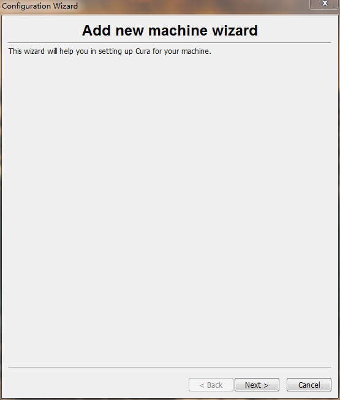
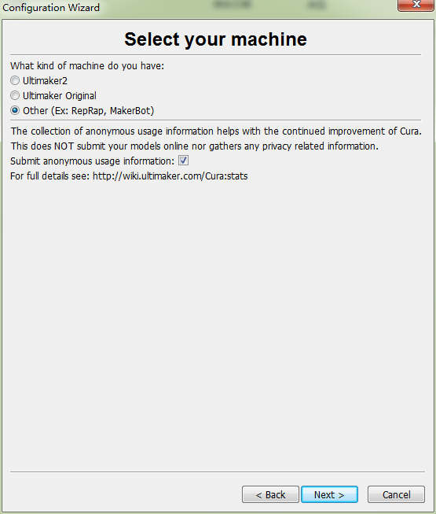
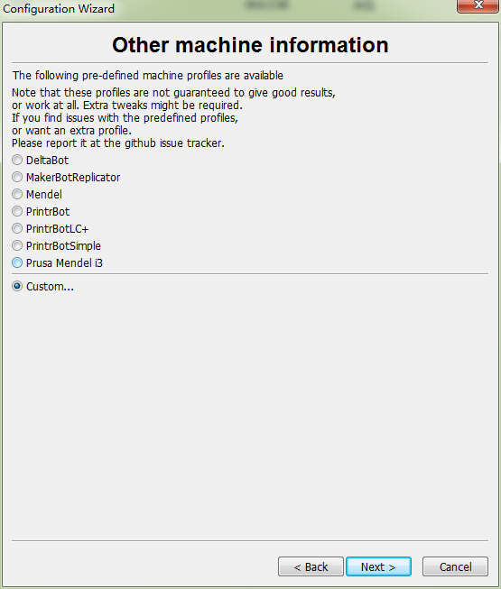
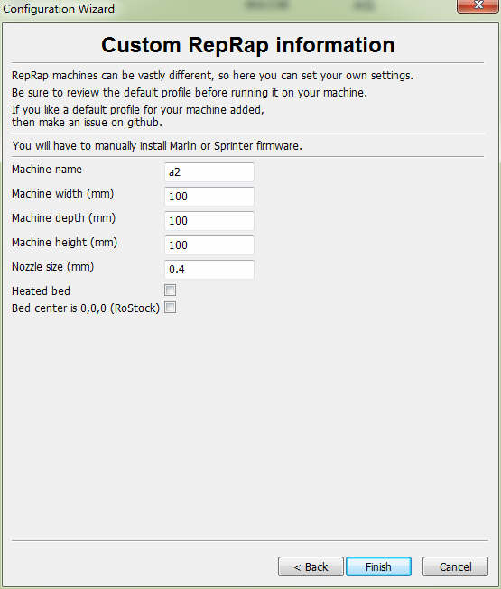
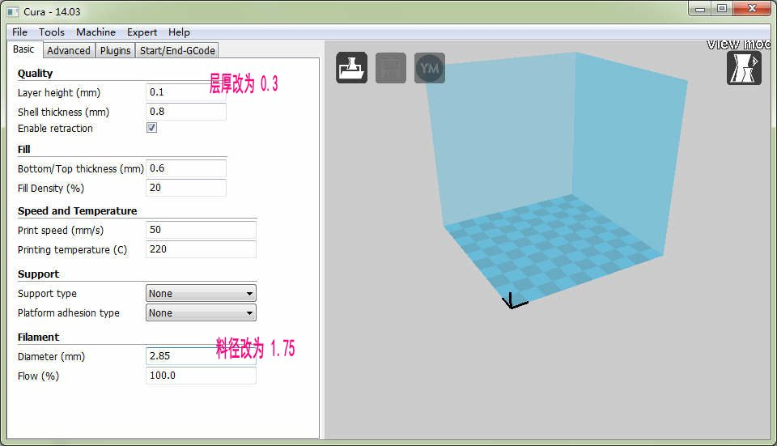
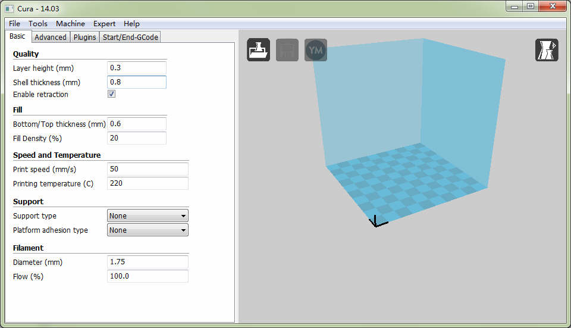
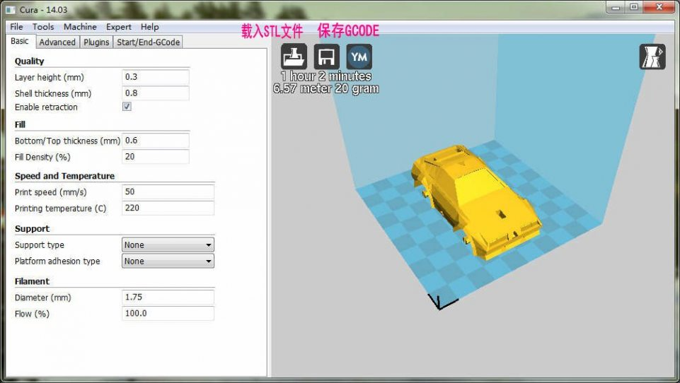

切片软件Cura使用指南
下载Cura
按照你的电脑系统下载最新的Cura软件
Windows版本 http://software.ultimaker.com/current/Cura_14.12.1.exe
MacOS版本 http://software.ultimaker.com/current/Cura-14.12.1-MacOS.dmg
安装完毕以后运行Cura软件
配置机型
下图是配置机型对话框

机型选择中选"Other":

选机型自定义"Custom..."

修改机器打印尺寸，改成 宽(Width) 深(depth) 高(height) 都是100mm
把热头尺寸(Nozzel Size) 改成0.4mm

点击Finish完成打印机配置。
打印设置
在打印设置里面修改层厚为0.3mm，料径为1.75mm

修改好层厚和料径后的界面：

载入和切割模型
用右侧界面的第一个图标来载入STL模型文件，选中模型可以对模型做一些移动，旋转或缩放，如果切片成功，模型呈现黄色，这时可以用第二个图标来保存GCODE切片文件到SD存储卡。
